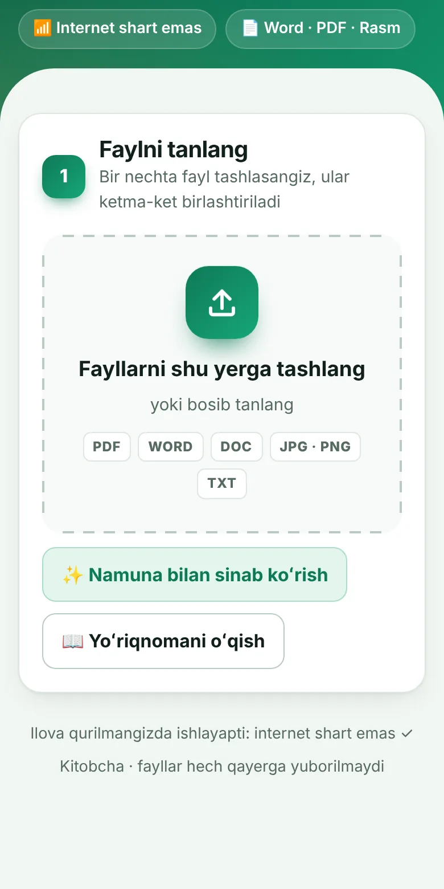
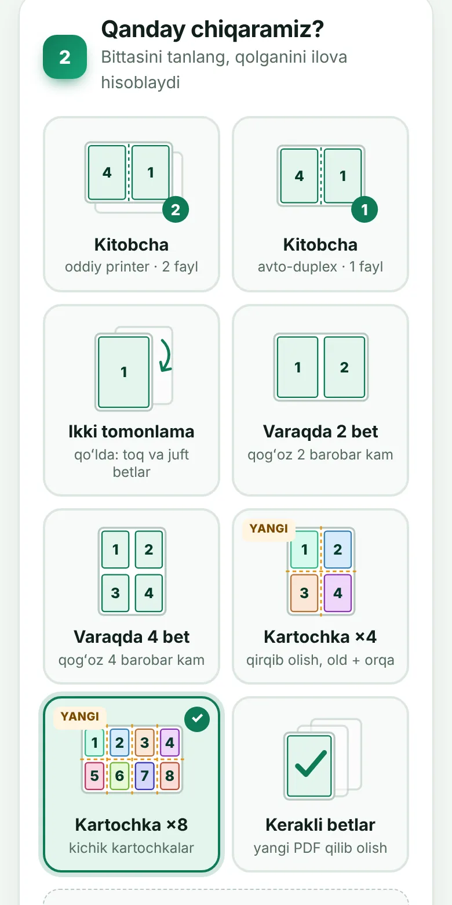
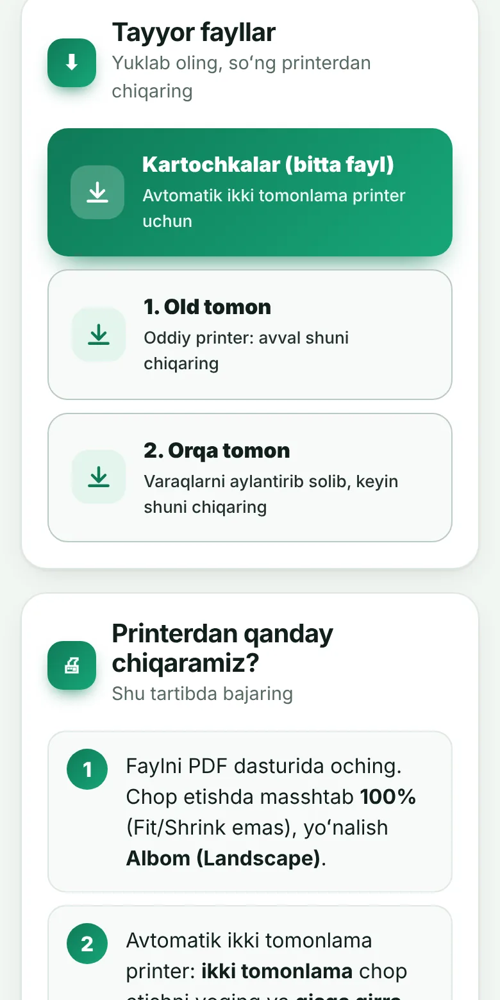

1. Kitobcha nima qiladi?
Siz Word yoki PDF hujjatni tashlaysiz. Ilova betlarni printer uchun kerakli tartibda joylab, tayyor PDF beradi. Uni oddiy printerdan chiqarasiz. Qogʻoz tejaladi, kitobcha yoki kartochka tayyor boʻladi.
Kitobcha
Hujjat kitob qilib buklanadi. Betlar tartibini ilova oʻzi hisoblaydi, siz adashmaysiz.
Qogʻoz tejash
Bir varaqqa 2 yoki 4 bet sigʻadi. Qogʻoz 2–4 barobar kam ketadi.
Kartochkalar
Varaqda 4 yoki 8 ta kartochka. Qaychi bilan qirqib olasiz, orqasida davomi boʻladi.
Kerakli betlar
Hujjatdan faqat kerakli betlarni olib, yangi PDF qilasiz.
2. Boshlash: 3 qadam
Ilovani ochganingizda tepada yashil sahifa koʻrinadi. Pastga tushing va shu 3 qadamni bajaring.
Faylni tanlang
Katta maydonni bosing va faylni tanlang. Word (.docx va .doc), PDF, rasm yoki .txt boʻladi. Kompyuterda faylni maydonga sudrab tashlash ham mumkin.
- Fayl hali tayyor emasmi? “Namuna bilan sinab koʻrish” tugmasini bosing: ilova oʻzi 12 betli namuna yasaydi.
- Bir nechta fayl tashlasangiz, ular ketma-ket birlashadi.

Usulni tanlang
Rasmli kartochkalardan birini bosing. Tanlangani yashil boʻladi va ✓ belgisi chiqadi.
- Qaysi birini tanlashni bilmasangiz, pastdagi “Qaysi usulni tanlayman?” jadvaliga qarang.
- Keyingi “Natija” boʻlimida varaq rasmda koʻrinadi. “Aylantirib koʻrish” tugmasi qogʻozning orqa tomonini ham koʻrsatadi.

Yuklab oling va chiqaring
Yashil tugmani bosing. Tayyor PDF qurilmangizga yuklanadi, ekranda konfetti chiqadi 🎉
- Keyin shu PDF ni printerdan chiqaring. Qanday chiqarishni 4-boʻlimda rasmlar bilan koʻrsatganmiz.
- Hamma qogʻozni sarflashdan oldin “Faqat sinov” ni yoqib, 2 varaq chiqarib koʻring.

3. Qaysi usulni tanlayman?
“Men nima qilmoqchiman?” degan savolga javob toping va oʻng tomondagi usulni tanlang.
| Men xohlayman… | Tanlang |
|---|---|
| Hujjatni kitob qilib buklamoqchiman. Printerim oddiy. | Kitobcha · oddiy printer (2 fayl chiqadi) |
| Hujjatni kitob qilmoqchiman. Printerim ikki tomonlama chiqaradi. | Kitobcha · avto-duplex (1 fayl) |
| Kitob qilmayman, qogʻozni ikki tomoniga chiqarmoqchiman. | Ikki tomonlama (toq va juft betlar) |
| Qogʻozni tejamoqchiman: bir varaqqa bir necha bet. | Varaqda 2 bet yoki Varaqda 4 bet |
| Qirqib olinadigan kartochkalar kerak (lugʻat, qoida, shpargalka). | Kartochka ×4 (kattaroq) yoki ×8 (kichik) |
| Hujjatning bir qismini olmoqchiman. | Kerakli betlar |
4. Printerdan chiqarish
Eng muhim qoida: qogʻozning orqa tomoni old tomonning orqasiga toʻgʻri tushishi kerak. Buning uchun qogʻozni kitob varagʻini agʻdargandek, chapdan oʻngga aylantiring. Yuqori chet yuqorida qolsin.
Albom (yotiq) varaq: kitobcha va ×8 kartochka
Kitob (tik) varaq: ×4 kartochka va ikki tomonlama
Aylantirib koʻring: kitobcha varagʻi
Bir xil rangdagi kataklar bir-birining orqasida. Tugmani yoki varaqning oʻzini bosing.
A Oddiy printer (2 fayl)
- PDF ni oching. Chop etishda masshtab 100% (“Actual size”) tanlang. “Fit”, “Shrink” va “Booklet” tanlamang.
- 1. Old tomon faylini chiqaring.
- Chiqqan qogʻozlarni tartibini buzmasdan oling va yuqoridagi rasmdagidek aylantirib, printerga qayta soling.
- 2. Orqa tomon faylini chiqaring.
B Ikki tomonlama printer (1 fayl)
- PDF ni oching va chop etish oynasini oching (Ctrl + P).
- Masshtab 100%. Yoʻnalishni dastur oʻzi aniqlaydi.
- Ikki tomonlama (Two-sided) ni yoqing.
- Aylantirish turini tanlang: kitob varagʻidek (chapdan oʻngga) boʻlgani. Albom sahifada koʻpincha Short edge, kitob sahifada Long edge toʻgʻri chiqadi. Printer dasturlari har xil, shuning uchun avval sinab koʻring: teskari chiqsa, ikkinchisini tanlang.
5. Kartochkalar: qirqib olish uchun
Bitta varaqda 4 ta (katta) yoki 8 ta (kichik) kartochka chiqadi. Qaychi bilan qirqasiz, har kartochkaning orqasida davomi boʻladi.
Kartochka ×4
Kitob (tik) varaq, 2×2. Kartochka A6 oʻlchamida (105 × 148 mm). Yozuv kattaroq.
Kartochka ×8
Albom (yotiq) varaq, 4×2. Kartochka A7 oʻlchamida (74 × 105 mm). Yozuv kichik, juda tejamkor.
Qoida: 2 bet = 1 kartochka
Hujjatning 1-beti birinchi kartochkaning old tomoni, 2-beti uning orqa tomoni boʻladi. Keyin 3-4, 5-6 va hokazo. Shuning uchun Word da har kartochka uchun ikki sahifa yozing.
Qadamlar
- Word da hujjatni tayyorlang: har kartochka uchun 2 sahifa. Sahifa oʻlchamini A6 (×4 uchun) yoki A7 (×8 uchun) qiling, shunda yozuv kichrayib ketmaydi: Maket → Oʻlcham → A6.
- Faylni ilovaga tashlang va Kartochka ×4 yoki ×8 ni tanlang.
- Rasmda orqa tomonni tekshiring, “Faqat sinov” bilan 2 varaq chiqarib koʻring.
- Hammasini chiqaring (4-boʻlimdagi usul bilan) va punktir chiziqlar boʻylab qaychi bilan qirqing.
6. Savol-javob va muammolar
Biror narsa notoʻgʻri chiqsa, shu yerdan javob toping.
Orqa tomon teskari (bosh osti) chiqdi
Qogʻozni notoʻgʻri tomonga aylantirgansiz. Ikki tomonlama printerda: “Aylantirish” sozlamasini boshqasiga almashtiring (Short edge ↔ Long edge). Oddiy printerda: qogʻozni chapdan oʻngga (kitob varagʻidek) aylantirib soling, yuqoridan pastga emas.
Old va orqa tomon bir-biriga mos tushmadi (siljigan)
Chop etishda masshtab 100% boʻlsin. “Fit to page”, “Shrink to fit” yoki “Booklet” tanlansa, hamma narsa siljiydi. Ilovadagi “Bet hajmi” ni 95% da qoldiring.
Matn juda mayda chiqdi
Ilova betni kichraytirib joylaydi. Kartochkalarda hujjat sahifasini kartochka oʻlchamida (A6 yoki A7) yozing. Yoki ×4 ni tanlang, u ×8 dan ikki barobar kattaroq. Kitobchada A4 emas, A5 oʻlchamdagi hujjat ham yaxshi chiqadi.
Chetlari kesilib qoldi
“Bet hajmi” ni 90–95% qiling. Printerlar qogʻoz chetidan 4–5 mm ni chiqara olmaydi, bu normal.
Kitobchada betlar tartibi buzilgan koʻrinadi
Kitobchada betlar maxsus tartibda joylanadi (masalan, 1-varaqning old tomonida 12 va 1-betlar). Bu xato emas: buklaganingizda toʻgʻri tartibga tushadi. Ishonch uchun ilovadagi rasmga qarang.
Word (.doc) faylda jadval yoki rasm yoʻqoldi
Eski .doc fayldan faqat matn olinadi. Aniq koʻrinish kerak boʻlsa, Word da Fayl → Saqlash → PDF qilib, PDF ni tashlang. .docx fayllar jadval va rasm bilan oʻqiladi.
Fayl parol bilan himoyalangan, ochilmayapti
Word da parolni olib tashlab, qayta saqlang. Parolli fayllarni ilova oʻqiy olmaydi.
Fayllarim internetga yuboriladimi? Internet kerakmi?
Yoʻq. Hamma ish qurilmangizning ichida bajariladi, fayl hech qayerga ketmaydi. Ilovani bir marta internet bilan ochgach, keyin internetsiz ham ishlaydi.
Ilova yangilanmadi, eski koʻrinish chiqyapti
Ilova oflayn ishlashi uchun oʻzini xotirada saqlaydi. Internet bor paytda ochsangiz, yangi versiyani oʻzi yuklab oladi. Eski koʻrinish qolsa: ilovani butunlay yopib qayta oching, yoki kompyuterda Ctrl + Shift + R bosing.
Siyohni tejash uchun rangsiz chiqarsam boʻladimi?
Ha. “Qoʻshimcha sozlamalar” ichida “Rangsiz (kulrang) chiqarish” bor. Fayl biroz kattaroq boʻladi va sekinroq tayyorlanadi.
7. Ilovani telefon yoki kompyuterga oʻrnatish
Oʻrnatsangiz, ilova alohida belgi bilan ochiladi va internetsiz ham ishlaydi.
📱 Telefonda
- iPhone (Safari): pastdagi “Ulashish” tugmasi → “Bosh ekranga qoʻshish”.
- Android (Chrome): yuqoridagi ⋮ menyu → “Ilovani oʻrnatish” yoki “Bosh ekranga qoʻshish”.
💻 Kompyuterda
- Chrome / Edge: manzil satrining oʻng tomonidagi oʻrnatish belgisini bosing.
- Yoki ilova pastidagi “Ilova sifatida oʻrnatish” yozuvini bosing.
8. Quti uchun stiker (masalan, Kinder)
Mijozning rasmi qutining haqiqiy oʻlchamida chiqadi. Varaqqa koʻp stiker sigʻadi, qirqib qutiga yopishtirasiz.
Qutiga stiker
Rasm qutining old tomoni oʻlchamiga keltiriladi va A4 varaqqa imkon qadar koʻp joylanadi.
- AI orqali rasmni tayyorlang (masalan, qutidagi bola oʻrniga mijozning rasmi) va faylni saqlang.
- Faylni ilovaga tashlang va “Qutiga stiker” ni tanlang.
- Qutini chizgʻich bilan oʻlchang: old tomonining eni va boʻyi, millimetrda. Ilovadagi “Eni” va “Boʻyi” ga yozing va “Shu oʻlchamni saqlash” ni bosing. Keyingi safar roʻyxatdan tanlaysiz. Har xil quti, har xil oʻlcham: hammasini nomi bilan saqlab qoʻying.
- Ilova qutini rasmdan avtomatik topadi (ramka “avto” yozuvi bilan chiqadi). Kerak boʻlsa, ramkani qoʻlda toʻgʻrilang: siljiting, burchagidagi doiradan yoki pastdagi chiziqdan kattalashtiring. Qaytadan avtomatik topish uchun “Avto-kadr” ni bosing. Ramka ichidagi qism stikerga chiqadi.
- Avval “Sinov: faqat kontur” ni oddiy qogʻozga chiqaring va qutiga qoʻyib koʻring. Kontur qutining old tomoniga mos tushishi kerak. Mos kelmasa, oʻlchamni tuzatib qayta chiqaring.
- “Har rasmdan nechta stiker” da 1 boʻlsa, faqat bitta stiker chiqadi. Butun varaqni bir xil rasm bilan toʻldirish uchun “Varaqni toʻldirish” ni bosing.
- “Stikerlar (PDF)” ni masshtab 100% bilan chiqaring va burchaklardagi qora chiziqchalar orasidan qaychi bilan qirqing.